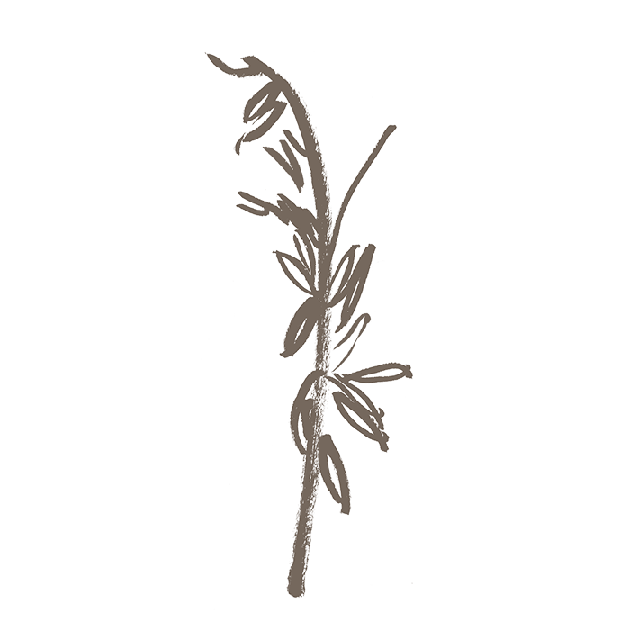
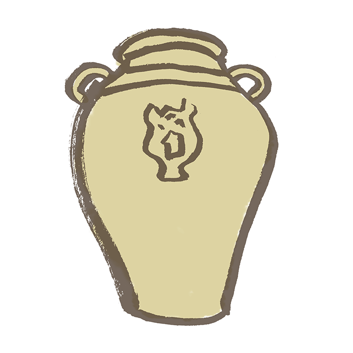

Lakapati/Ikapati, Transgender Tagalog Goddess of Fertility & Agriculture
Known as a transgender deity and one of the most understanding and kindest deities of the Tagalogs, Lakapati is the deity of fertility, fertility for the fields and crops, and protector of farm animals and crops.
Siya was the deity who gave the gift of agriculture to mankind and Lakapati literally means, “giver of food”. Note: I will use the Tagalog term “siya” to refer to he/she as Lakapati is transgender. “Siya” is gender neutral, meaning it refers to both he/him and she/her. Because there is no English equivalent of siya for someone who is gender neutral I will being using the Tagalog term siya here for this purpose.)
In some myths Lakapati is married to Mapulon, the God of the Seasons, and gave birth to Anagolay, the Goddess of Lost Things. In another myth Lakapati was the consort of Bathala who was also transgender, and siya was the one that began the creation of the world while Bathala finished it.
The most common offerings to siya was to put a plate of rice when there was a full moon around seven in the evening. Or if people needed Lakapati’s help with any trouble, they would offer plants and herbs of any kind. During planting time, Lakapati was worshiped in the fields by carrying around carved figures and statues of siya, same way we carry the Sta.
Nino figures for worship and blessings today. During rituals and offerings in the fields, farmers would hold up a child up in the air while invoking the deity directly, saying “Lakapati, pakanin mo yaring alipin mo, huwag mo gutumin.” (Translation: Lakapati, feed this servant who is yours, let him/her not be hungry) Note: alipin does mean slave, however it also means servant and in this translation of alipin it is stating how the people are the servants of Lakapati asking for Lakapati’s blessings for the fertility and protection of crops.